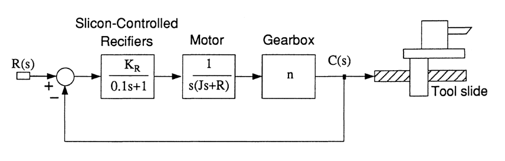

---
redirect_from:
  - "/homework/lag-compensation/problems"
interact_link: content/homework/lag_compensation/problems.ipynb
kernel_name: matlab
kernel_path: content/homework/lag_compensation
has_widgets: false
title: |-
  Homework 3 - Lag Compensation
pagenum: 44
prev_page:
  url: /homework/lead_compensation/problems.html
next_page:
  url: /homework/lag_lead_pid/problems.html
suffix: .ipynb
search: s control system lag gain required rad design ratio loop transfer function frac low frequency constant input sup compensator plant damping order controlled figure motor accuracy position scrs div swansea university college engineering eglm modern systems homework compensation problems satellite attitude open determine ensure steady state error acceleration ssup give g k velocity kv feedback while zeta dominant second closed poles achieve specification numerical path turret lathe illustrated gear n inertia j kg msup resistance r nm necessary attain thousandths inch cutting tool relative workpiece therefore ramp cascade controller inserted before silicon rectifiers provide step command overshoot less suitable kr

comment: "***PROGRAMMATICALLY GENERATED, DO NOT EDIT. SEE ORIGINAL FILES IN /content***"
---

    <main class="jupyter-page">
    <div id="page-info"><div id="page-title">Homework 3 - Lag Compensation</div>
</div>
    <div class="jb_cell">

<div class="cell border-box-sizing text_cell rendered"><div class="inner_cell">
<div class="text_cell_render border-box-sizing rendered_html">
<h4 id="Swansea-University">Swansea University<a class="anchor-link" href="#Swansea-University"> </a></h4><h4 id="College-of-Engineering">College of Engineering<a class="anchor-link" href="#College-of-Engineering"> </a></h4><h2 id="EGLM03-Modern-Control-Systems">EGLM03 Modern Control Systems<a class="anchor-link" href="#EGLM03-Modern-Control-Systems"> </a></h2><h1 id="Homework-3:-Lag-Compensation">Homework 3: Lag Compensation<a class="anchor-link" href="#Homework-3:-Lag-Compensation"> </a></h1>
</div>
</div>
</div>
</div>

<div class="jb_cell">

<div class="cell border-box-sizing text_cell rendered"><div class="inner_cell">
<div class="text_cell_render border-box-sizing rendered_html">
<h2 id="Problems">Problems<a class="anchor-link" href="#Problems"> </a></h2><ol>
<li><p>A satellite attitude control system has an open-loop transfer function</p>
<p>$$G_o(s)=\frac{4(s+2)}{s}$$</p>
<p>determine the low frequency gain required to ensure that the steady-state error to a constant acceleration input of 1 rad/s<sup>2</sup> is 1/40 rad. Design a lag compensator to give the required low frequency gain.</p>
</li>
</ol>

</div>
</div>
</div>
</div>

<div class="jb_cell">

<div class="cell border-box-sizing text_cell rendered"><div class="inner_cell">
<div class="text_cell_render border-box-sizing rendered_html">
<ol>
<li><p>A plant has a transfer function</p>
<p>$$G(s) = \frac{K}{s(s+10)^2}$$</p>
<p>The velocity constant $K_v$ of a feedback control system for this plant is to be 20, while  the  damping ratio $\zeta$ of the dominant second-order closed-loop poles is to be 0.707. Design a lag compensator to achieve this specification.</p>
</li>
</ol>

</div>
</div>
</div>
</div>

<div class="jb_cell">

<div class="cell border-box-sizing text_cell rendered"><div class="inner_cell">
<div class="text_cell_render border-box-sizing rendered_html">
<ol>
<li>A numerical path-controlled turret lathe control system is illustrated in Figure 1. The gear ratio is $n = 0.1$, the motor inertia is $J = 10^{- 3}$ kg.m<sup>2</sup> and  the motor resistance is $R = 10^{-2}$ Nm/(rad/s). It is necessary to attain an accuracy of 0.5 thousandths of an inch in the position of the cutting tool relative to the workpiece and therefore a position accuracy of 1% is required for a ramp input. Design a cascade controller, to be inserted before the silicon-controlled-rectifiers (SCRs), in order to provide a step command with an overshoot of less than 2%. A suitable damping ratio for the system is 0.8. The gain of the SCRs is $K_r = 5$.</li>
</ol>
<p></p>
<div style="text-align:center">Figure 1</div>
</div>
</div>
</div>
</div>

 


    </main>
    